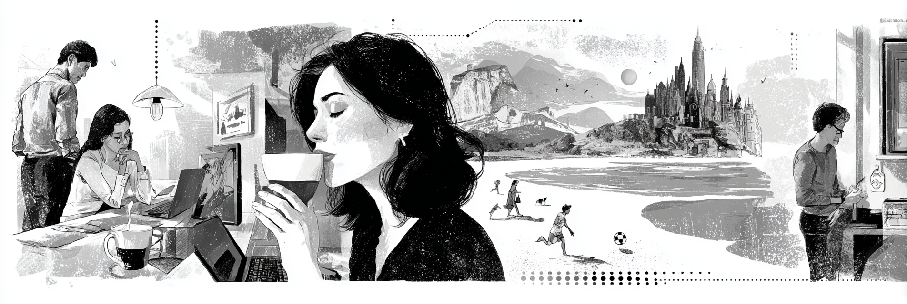
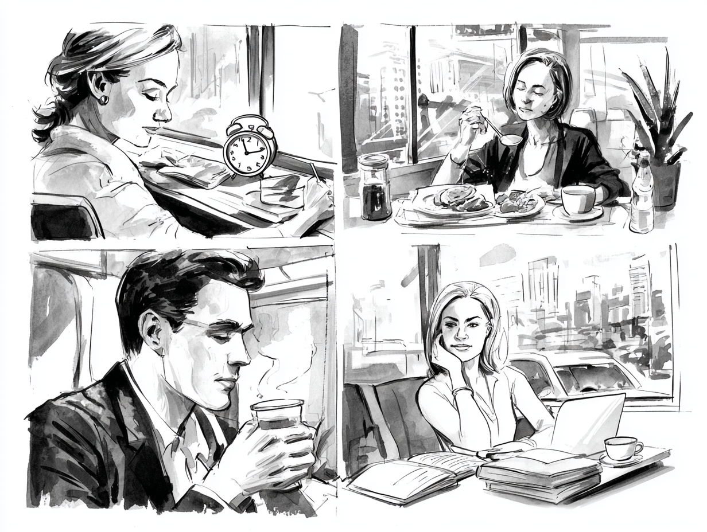
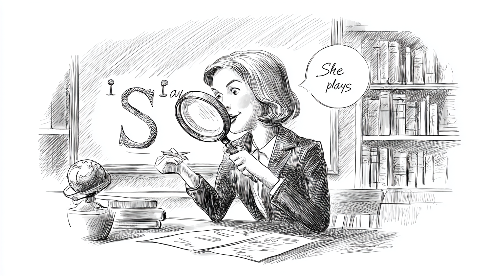
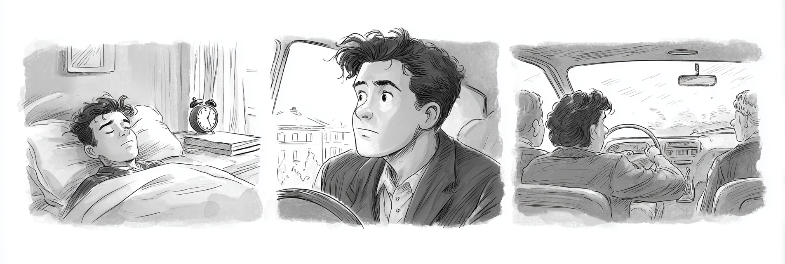
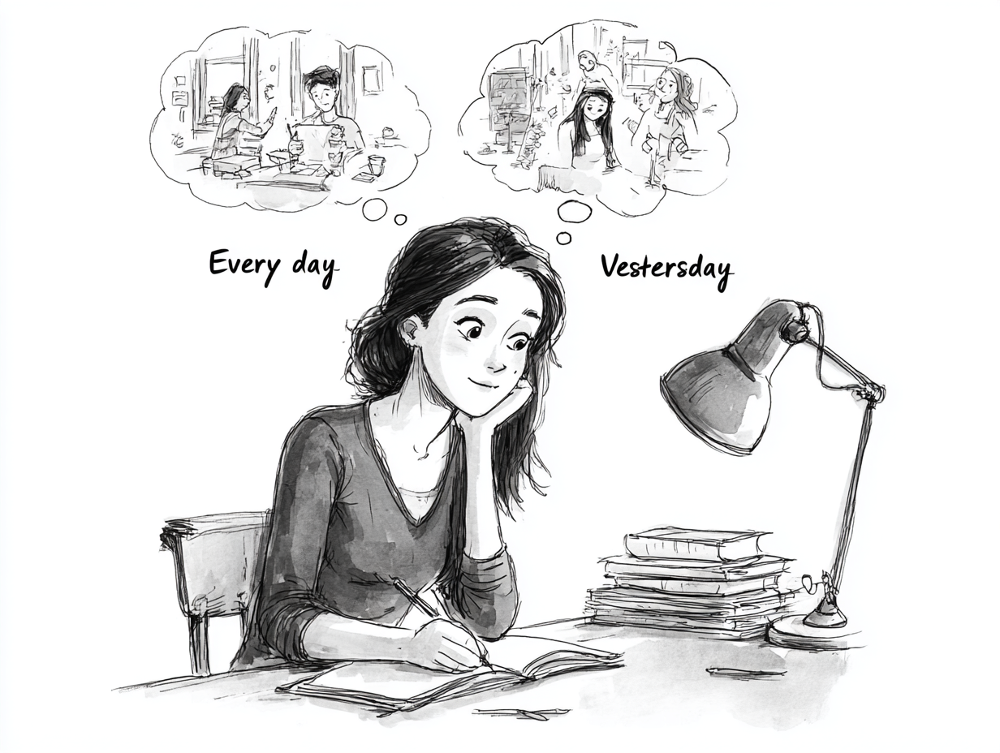

Tenses Review: Present and Past
Review the Present Simple and Simple Past tenses to talk about routines and past events.

Present Simple Review
We use the Present Simple to talk about habits, routines, and general truths.
For I / you / we / they → use the base verb (no change):
| Form | Structure | Example |
|---|---|---|
| Affirmative | Subject + base verb | I work every day. / They play soccer. |
| Negative | Subject + do not (don't) + base verb | We don't eat meat. |
| Interrogative | Do + subject + base verb? | Do you speak English? |
For he / she / it → add -s or -es to the verb:
| Form | Structure | Example |
|---|---|---|
| Affirmative | Subject + verb + -s / -es | She works every day. / He watches TV. |
| Negative | Subject + does not (doesn't) + base verb | He doesn't like coffee. |
| Interrogative | Does + subject + base verb? | Does she play soccer? |
How to add -s / -es / -ies (for he / she / it):
| Rule | When to Use | Examples |
|---|---|---|
| Add -s | Most verbs | play → plays, read → reads, like → likes |
| Add -es | Verbs ending in -ch, -sh, -ss, -x, -o | watch → watches, go → goes, miss → misses |
| Change y → -ies | Verbs ending in consonant + y | study → studies, carry → carries |
| Irregular | have | have → has |
| Verb | Português | Example Sentence |
|---|---|---|
| wake up | acordar | I wake up at 7 a.m. |
| belong to | pertencer a | This book belongs to Maria. |
| depend on | depender de | The answer depends on the situation. |
| look forward to | estar ansioso por | I look forward to the holidays every year. |
| consist of | consistir em | The test consists of 20 questions. |
| improve | melhorar | She improves her English every semester. |
| attend | frequentar / participar de | He attends classes every morning. |
| involve | envolver | The project involves a lot of research. |
| require | exigir / precisar | This job requires good communication skills. |
| recognize | reconhecer | I don't recognize this word. |
| avoid | evitar | She avoids eating too much sugar. |
| prefer | preferir | They prefer to study in the morning. |
Some verbs in the table above have two or three words: wake up, depend on, look forward to. These are called phrasal verbs — a verb combined with a preposition or adverb that creates a new meaning.
For example, look means olhar, but look forward to means estar ansioso por — a completely different idea!
Don't worry about memorizing all of them now. We will study phrasal verbs in detail in Chapter 8.

Examples in Context
Ana wakes up early every day.
Ana acorda cedo todos os dias.
Lucas studies at a public school.
Lucas estuda em uma escola pública.
They don't eat meat.
Eles não comem carne.
She doesn't like cold weather.
Ela não gosta de tempo frio.
Do you play any sports?
Você pratica algum esporte?

Common mistakes with the Present Simple:
- Forgetting the -s: "She work" → "She works"
- Double marking: "She doesn't works" → "She doesn't work"
- Wrong auxiliary: "Does they like?" → "Do they like?"
These words help you know which tense to use:
| Present Simple | Simple Past |
|---|---|
| every day / every morning | yesterday |
| usually / always / never | last week / last night |
| on Mondays / on weekends | two days ago / a year ago |
| sometimes / often | in 2024 / when I was young |
Where do time signals go in a sentence?
Most time expressions can go at the beginning or the end of the sentence — both are correct:
- Every day, she rides her bike. = She rides her bike every day. ✓
- Yesterday, I went to the park. = I went to the park yesterday. ✓
Frequency adverbs (usually, sometimes, often, always, never) most commonly go before the main verb:
- She usually wakes up at 7. ✓
- They never eat fish. ✓
But usually, sometimes, and often are flexible — they can also go at the beginning or end:
- Usually, she wakes up at 7. ✓
- She wakes up at 7, usually. ✓
- Sometimes I go to the park. ✓
Always and never are strict — they stay before the main verb:
- She always arrives on time. ✓
Always she arrives on time.✗She arrives on time always.✗
Exception: With the verb to be, all frequency adverbs go after the verb:
- He is always late. ✓
- They are never bored. ✓
- She is usually happy. ✓
Suggested time: 25 minutes
Pronunciation focus: Practice the three pronunciations of the -s ending: /s/ (works, likes), /z/ (plays, reads), and /ɪz/ (watches, teaches). Have students sort verbs by sound.
Activity: Ask students to describe their daily routines using at least 5 different verbs from the vocabulary table.
Fill in the blanks with the correct Present Simple form of the verb in parentheses.
Select the correct form to complete each sentence.
The teacher _______ us to bring our notebooks every day.
b) requiresShe _______ eats fast food because she prefers healthy meals.
a) neverThe result _______ on how much you practise.
b) dependsWhich sentence has the frequency adverb in the CORRECT position?
b) He always arrives late to class.My parents _______ me to attend university, but I _______ to work first.
c) want / preferSimple Past Review
We use the Simple Past to talk about completed actions in the past.
| Form | Structure | Example |
|---|---|---|
| Affirmative | Subject + verb in past form | She worked yesterday. |
| Negative | Subject + did not (didn't) + base verb | He didn't go to school. |
| Interrogative | Did + subject + base verb? | Did you eat lunch? |
Regular verbs: Add -ed to the base form:
- Most verbs: add -ed (work → worked, play → played)
- Verbs ending in -e: add -d (live → lived, like → liked)
- Verbs ending in consonant + y: change y to -ied (study → studied)
- Short verbs (CVC): double the final consonant + -ed (stop → stopped)
Irregular verbs have special past forms that must be memorized (see table below).
| Base Form | Simple Past | Português |
|---|---|---|
| go | went | ir → foi |
| eat | ate | comer → comeu |
| have | had | ter → teve |
| see | saw | ver → viu |
| come | came | vir → veio |
| make | made | fazer → fez |
| take | took | pegar/levar → pegou/levou |
| get | got | conseguir/ficar → conseguiu/ficou |
| read | read | ler → leu |
| write | wrote | escrever → escreveu |
| buy | bought | comprar → comprou |
| sleep | slept | dormir → dormiu |
| wake up | woke up | acordar → acordou |
| drink | drank | beber → bebeu |
Dialogue: Talking About the Weekend
Regular verbs follow a pattern (work → worked, play → played). Irregular verbs change completely (go → went, eat → ate). There is no rule for irregular verbs — you need to memorize them! Start with the most common ones in the table above.
Suggested time: 25 minutes
Pronunciation focus: Practice the three pronunciations of -ed endings: /t/ (worked, watched), /d/ (played, lived), and /ɪd/ (wanted, needed).
Activity: Have students read the dialogue in pairs. Then ask them to write 3 sentences about what they did last weekend.
Fill in the blanks with the correct Simple Past form of the verb in parentheses.
Match each verb in the present form (left) with its correct past form (right). Write the letter in the box.
Reading: Present and Past Together
Lucas is a 16-year-old student who lives in Belo Horizonte. Every day, he wakes up at six o'clock and takes a bus to school. He studies in the morning and usually eats lunch at the school cafeteria. In the afternoon, he goes home and does his homework. He likes to play video games after he finishes studying. On weekends, he plays soccer with his friends at the park near his house.
Last week was different from his normal routine. On Monday, Lucas woke up late because his alarm didn't ring. He missed the bus and his mother drove him to school. He arrived ten minutes late and his teacher was not happy.
On Wednesday, the school organized a field trip to a science museum. Lucas and his classmates took a special bus to the museum. They saw many interesting exhibits about space and technology. Lucas loved the planetarium show. He took many photos and bought a small telescope at the gift shop.
On Friday, Lucas didn't go to school because he was sick. He stayed in bed all day and drank a lot of tea. His friend Camila called him after school and told him about the math test. Lucas felt worried, but his mother said he could take the test the next week.
Now it is Monday again. Lucas feels better and he is back at school. He has his routine back, but he still remembers last week. It was an unusual week, but he learned something important: every day is different, and that is what makes life interesting.
Pre-reading activity: Ask students: "What is your normal school routine? Did anything different happen last week?" This helps activate both tenses before reading.
Reading strategy: Have students underline present tense verbs in one color and past tense verbs in another color while reading.

Read each sentence. Write T (True) or F (False) based on the text.
Answer the questions in complete sentences based on the text.
What does Lucas usually do in the afternoon?
He goes home and does his homework. He likes to play video games after he finishes studying.Why did Lucas arrive late on Monday?
Lucas arrived late because he woke up late. His alarm didn't ring.What did Lucas see at the museum?
He saw many interesting exhibits about space and technology. He loved the planetarium show.Who called Lucas on Friday, and what did she tell him?
His friend Camila called him and told him about the math test.Writing: My Yesterday vs. My Typical Day
Write two short paragraphs. In the first paragraph, describe your typical day using the Present Simple. In the second paragraph, describe what you did yesterday using the Simple Past. Use the sentence starters below to help you.
Try to use at least 5 different verbs in each paragraph. Compare what you usually do with what you actually did yesterday. Were they the same or different?
Paragraph 1: My Typical Day (Present Simple)
Every day, I wake up at ___. I usually ___. In the morning, I ___. After school, I ___. In the evening, I ___.
Paragraph 2: My Yesterday (Simple Past)
Yesterday, I woke up at ___. I ___. In the morning, I ___. After school, I ___. In the evening, I ___.

Suggested time: 20 minutes
Assessment criteria:
- Correct use of Present Simple in Paragraph 1
- Correct use of Simple Past in Paragraph 2
- At least 5 different verbs in each paragraph
- Clear and coherent paragraph structure
- Comparison between routine and actual day (bonus)
Extension activity: Have students share their paragraphs in pairs and find 3 differences between their routines and their yesterdays.
Chapter 1 - Answer Key
Exercise 1: Complete with the Present Simple
Exercise 2: Choose the Correct Option
Exercise 3: Complete with the Simple Past
Exercise 4: Match the Present to the Past
Exercise 5: True or False
Exercise 6: Answer the Questions
Exercise 7: Write About Your Routine and Your Yesterday
Answers will vary. Check for correct use of Present Simple in Paragraph 1 and Simple Past in Paragraph 2. Look for at least 5 different verbs per paragraph and coherent paragraph structure.